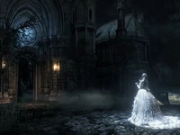

Levels
-

Nightmare of Mensis
-

Yahar’Gul Unseen Village
Yharnam
Description
Yharnam is an imposing and sprawling metropolis characterized by Gothic and Victorian architecture. Yharnam's Victorian architecture is reminiscent of late 19th Century European cities including Paris, Edinburgh, Cologne and London. Residents of Yharnam are called Yharnamites. The town appears rather grim and decadent and has been ravaged by a mysterious plague, becoming infested with dangerous beasts and demented citizens. During the outbreak, the inhabitants of Yharnam formed large street mobs and pursued those who were infected by the plague, the beasts that terrorize the city, and trespassers who dared to set foot in the dark streets. Those unfortunate enough to be captured by the mobs of crazed citizens meet a gruesome end, often at the stake.
Plot
Yharnam is an ancient city renowned as the home of a mysterious medical remedy to the plague. Over the years, many desperate travellers have ventured into this city in search for this cure. None of them have returned. The Hunter of Bloodborne ventures into the perilous streets of Yharnam hoping to discover the origin of the plague. Yharnam is named after the Pthumerian Queen.
Forbidden Woods
Description
The Forbidden Woods is a large forest on the outskirts of Yharnam, lying between the city and the Forbidden Grave and Byrgenwerth. It is home to a village of those who have been chased from the city, and is currently the nesting grounds of giant, venomous and parasitic snakes that have used its denizens as hosts. Entering the forest is forbidden by the Healing Church. There are many different places that make up the Forbidden Woods, as it is one of the largest areas in Yharnam. There are two forest areas, two windmills, and a village between both.
Access
The path to the Forbidden Woods is through the large plaza with two Church Giants roaming around that connects Cathedral Ward with the Grand Cathedral. The path is at the side and is blocked by one of the giants. The Forbidden Woods door will lie at the end of the path. The Forbidden Woods door will be locked and requires a password. The password is obtained by investigating the skull on top of the altar in the Grand Cathedral, after defeating Vicar Amelia.
Shortcut to Iosefka's Clinic
In the Forbidden Woods, there is an Underground Cavern which leads to the grave blocked off by the locked gate in the game. In order to reach this area, follow the lanterns to the first village in the Woods, the one right before the oily mire, and go up and around to the wooden shacks. There is a hidden path which leads off to the left of the dog cages. This path leads underground to a poison swamp inhabited by Church Giants and Parasite Larva. This area does have a lot of Blood Gems, so it is advisable to bring Antidote and wear either the Black Church Set or the White Church Set.
Notes
- There are several traps in the area. These traps are activated by stepping on a pile of wood and can be fatal.
- A clue, in the form of a Note, can be found atop a tower in the Cathedral Ward, hinting to the whereabouts of the password needed to open the Forbidden Woods gate (that being the skull upon the altar in the Grand Cathedral).It states: "A watchman of Byrgenwerth guards the gate with a password, the sacred adage of the Grand Cathedral."
Nightmare of Mensis
Description
When Micolash and the School of Mensis sought an audience with Mergo, they would likely never believe the events that would have transpired from it. The sacrifice of their own physical bodies was needed to project their minds into the realm of nightmares, but that sacrifice served their needs and bore its fruits. This realm was hosted by none other than Micolash, and it was by his own design or want that the Nightmare of Mensis came to be.
The giant castle-like structure is divided into three very specific places:
- The Chapel where the Nightmare Apostles reside, at the left-most side of the whole structure.
- Mergo's Loft, which houses the most important foes in the area, and is located on the right side.
- The Great Bridges that connect both buildings, the top and middle one containing gardens, and the bottom one being simply a pathway. In the middle distance there is an enormous tower, where something gazes from afar, a giant spotlight that follows anything in its line of sight and induces Frenzy.
Hunter's Dream
Description
The Hunter's Dream is your character's home base, where items are purchased, leveling up is conducted, and weapons are fortified and repaired. Your character can be transported back to the Hunter's Dream by speaking with Gatekeeper Messengers in the field.
General Information
The Hunter's Dream acts as a central hub and sanctuary for the Hunter, where items can be purchased and weapons can be upgraded, as well as a connection to every other location in game.
-
Hunter's Workshop:
- The Hunter's Workshop is the only building in the Hunter's Dream and gives the Hunter a place to store items, repair/fortify weapons, and replace Caryll Runes. Gehrman resides in the Workshop and will give helpful advice at the beginning of the game. The workshop also has a Storage where exceed items and trinkets are held.
-
Bath Messengers:
- The Bath Messengers are found in the small garden area next to the Workshop. They act as a merchant for the Hunter, trading mostly consumables and gear for Blood Echoes and allowing players to sell excess items as well. Acquiring special Badges will further unlock their wares.
- The Insight Bath Messengers are found almost directly above the Bath Messengers and function in the same way but will only trade, mostly, consumables and materials for insight.
-
The Doll:
- Outside, near the stairs to the Workshop, is The Doll. Speak to her in order to level up.
-
Awakening Stones:
- The Awakening Headstones are along the other side of the stairs and function as a way to teleport to previously unlocked locations.
-
Ritual Altars:
- Ritual Altars are found along the path that leads to the rear of the Workshop. These can be used to create Chalice Dungeons to explore the Labyrinth that lies below Yharnam.
-
Stump Messenger:
- Behind the Hunter's Workshop lies a Stump with Messengers. After acquiring special adornments, players can equip these embellishments at the Stump to make all of the Messengers display the item they have just been adorned with. These adornments range from simple hats, to incense urns placed on their heads.
Hunter's Nightmare
Description
The area itself consists of a twisted, nightmarish version of Cathedral Ward filled with terrors and blood-drunk hunters alike. Many parts of the Ward have been replaced with smooth rock faces, and is full of even stronger versions of normal enemies.
It essentially has 4 landmarks that exist in Yharnam but with different variations:
- Oedon Chapel
- Grand Cathedral
- Central Yharnam's Dark Building
- Old Yharnam's Chapel
Though the Hunter's Nightmare is the name of a lamp, it is also the name of the surrounding area.
Access
The Hunter's Nightmare is accessed through the Amygdala outside the Oedon Chapel, once the player is in possession of the Eye of a Blood-drunk Hunter after defeating Vicar Amelia.
Lore
The Hunter's Nightmare was created following the sacrilegious actions of the old hunters and Byrgenwerth scholars at the Fishing Hamlet, where the remains of a Great One named Kos had washed ashore nearby and mutated its inhabitants. The scholars and the old hunters slaughtered and mutilated the villagers in their search for "eyes" and other secrets, and had done something sacrilegious to Kos's body that would cause the creation of the Hunter's Nightmare and the curse that would befall the hunters. Old hunters and scholars who participated in committing the atrocities at the Fishing Hamlet, such as Maria and Laurence, would be condemned to the Nightmare, as well as any hunter who would become blood-drunk in the years following. Gehrman, though being an old hunter himself, avoided this fate due to being bound to serving another Great One, who had deceived Gehrman and trapped him in the Hunter's Dream.
Yahar’Gul Unseen Village
Description
If the Hunter dies to a Kidnapper, a cut scene will be triggered and they will be taken to Hypogean Gaol. Most of Yahar'gul, Unseen Village is inaccessible until Rom, the Vacuous Spider is defeated, after which the Hunter will be teleported to the area with the Lesser Amygdala who will transport you to the Lecture Building. The door to Yahar'gul will now be open. Within the village, the entire population of Yahar'gul appears to have been killed in the process of a ritual performed by the School of Mensis, with a staggering amount of petrified corpses melded into the walls or cowering in isolated corners.
Lore
Yahar'gul was originally a city for the Mensis Scholars to explore the nature of Great Ones and how to propel humanity into its next evolutionary step, much like Byrgenwerth and the Choir they believed that it was from Insight, the "eyes on the inside" and the pursuit of forbidden Arcane knowledge was the staircase that allowed humanity's ascend into godhood. However, unlike those other groups, the School of Mensis was prepared to do whatever it took, without any remorse or consideration for the consequences. It would seem the experiment by the School of Mensis was to attempt the creation of a Great One. But something is quite unclear, as it would seem that the Pthumerians became somehow involved. In fact, it would appear that they perhaps took over the entire city after the Mensis ritual had transported the minds of the entire School of Mensis into the Nightmare of Mensis.
However, after the Blood Moon rises, it would seem that the Pthumerians became more active, and began to perform blood rites to summon the dead population and control them at their whim. All foes of this area have become gruesome amalgamates of flesh, or reanimated corpses, which are controlled by the Bell-ringing Women.They then began to summon what would seem to be the vessel for a Great One, The One Reborn. It is presumed this vessel was meant for Mergo. If, the player did not interrupt it that is. It is unknown whether what killed the populace was the Mensis Ritual or the preparations of the Pthumerians' rite for summoning The One Reborn. Many Great One Amygdala take up residence upon the chapels in the area, as they were drawn to prayers.